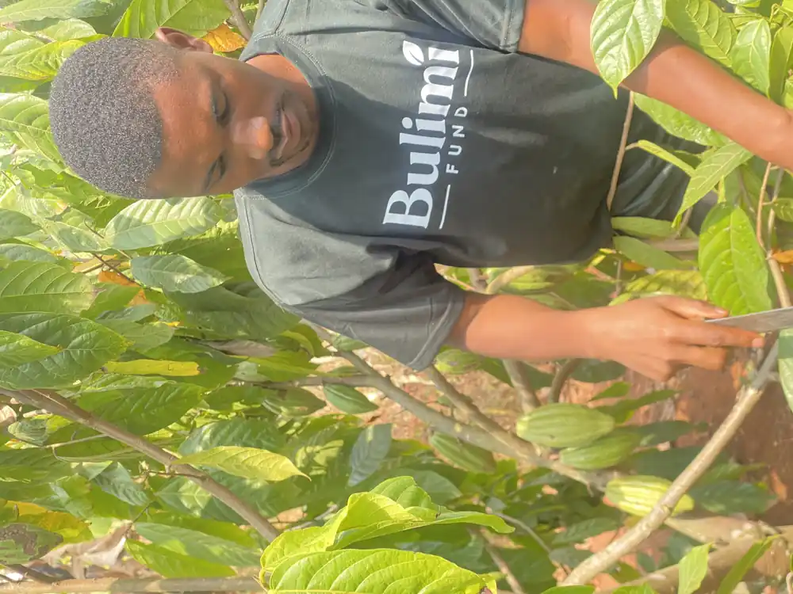
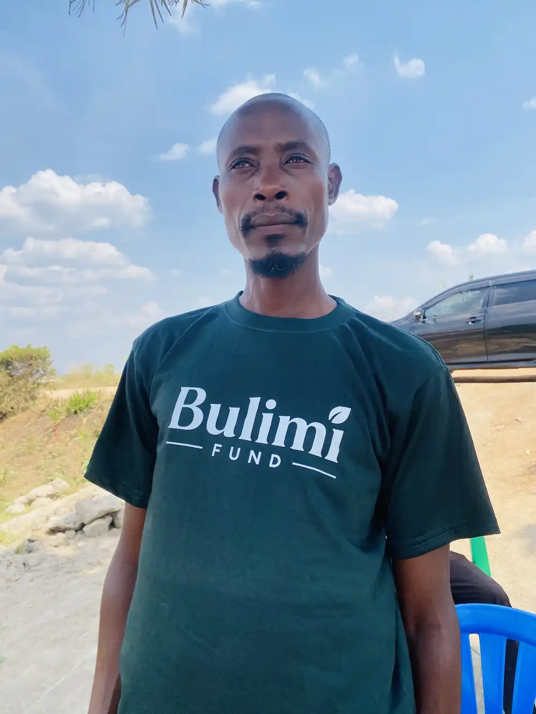

A productive cocoa garden takes more than planting material. Farmers need the right knowledge, healthy seedlings, regular technical support and a dependable buyer. Bulimi organizes these services into one practical pathway so farming families can build a long-term livelihood asset.
Bulimi's model is designed to support smallholder farmers to establish at least one acre of cocoa each in Western Uganda. Each acre of land represents regenerative agriculture practices through soil quality restoration, environmental conservation, quality seedlings last mile delivery, and farmer financial empowerment
Many rural families have land and the determination to build better livelihoods, but face barriers that cannot be solved by seedlings alone. They need practical knowledge, reliable planting material, continuing field support, access to appropriate inputs and a dependable route to market.
Bulimi brings these elements together in one farmer-centred system, introducing organized cocoa production in new cocoa-growing areas, beginning in Kyenjojo District.
Learn More About Us
Farmers are partners and business owners.
Clear communication and accountable records.
Field-level services designed to succeed.
Responsible land use and long-term productivity.
Meaningful opportunity for women and youth.
Coordinating farmers, buyers and communities.
Cocoa supply is shaped years before the first commercial harvest. Early partnership can improve planting material, farmer practices, traceability and buyer alignment while new gardens are being established.
Partner With UsJoin farmers, partners and supporters building a regenerative cocoa economy in Uganda.